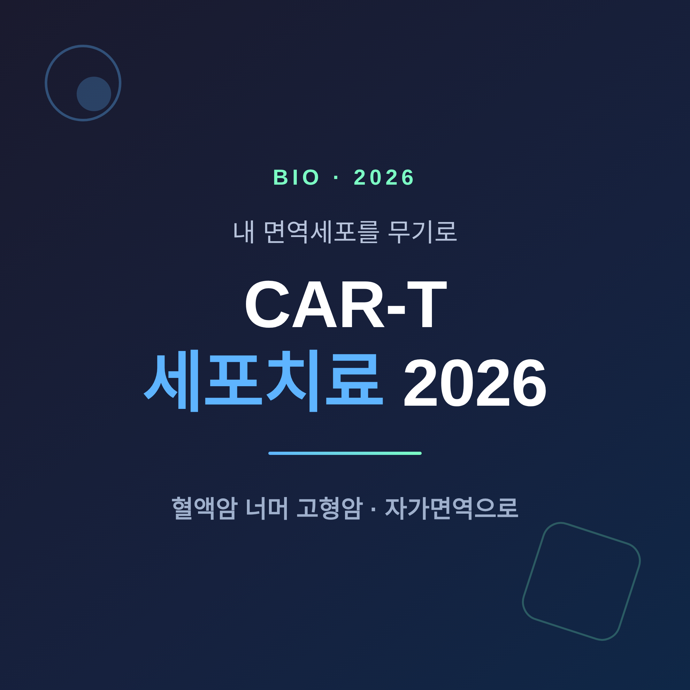
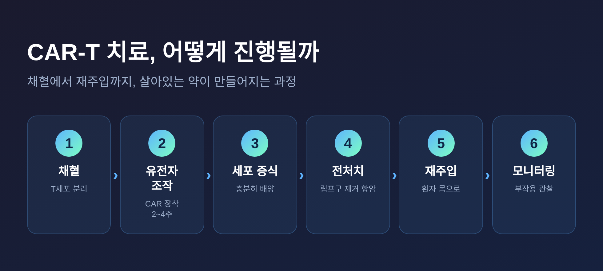
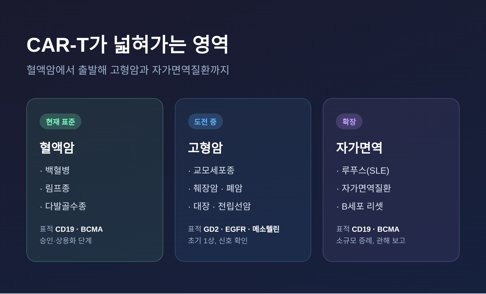
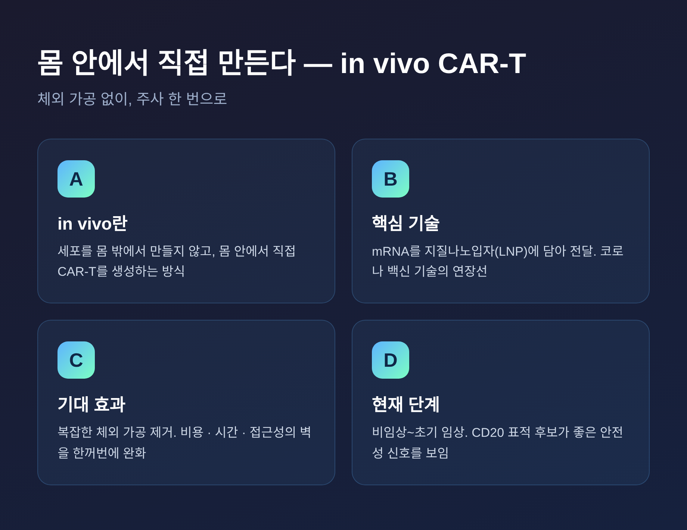
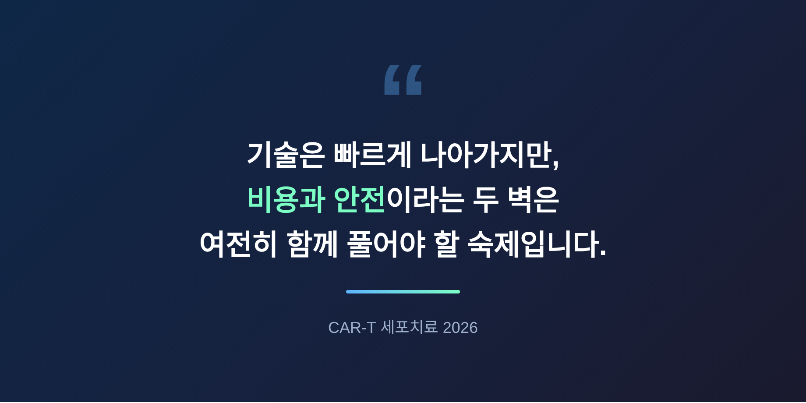

이번 글에서는 CAR-T 세포치료가 2026년 현재 어디까지 왔는지 정리해 보겠습니다.
한때 일부 혈액암에만 쓰이던 이 치료가, 지금은 고형암과 자가면역질환으로 영역을 넓히고 있습니다. 어려운 의학 용어는 최대한 쉽게 풀어 적었습니다.
먼저 핵심부터 말씀드립니다. CAR-T는 환자 자신의 면역세포를 꺼내 암을 알아보도록 개조한 뒤 다시 넣는 '살아있는 약'입니다. 2026년의 변화는 세 가지입니다. 고형암 도전, 자가면역질환 확장, 그리고 몸 안에서 직접 만드는 기술입니다.
CAR-T는 '키메라 항원 수용체 T세포'의 줄임말입니다.
쉽게 말하면 이렇습니다. 우리 몸의 면역세포인 T세포를 밖으로 꺼냅니다. 거기에 암세포의 표지(항원)를 알아보는 인공 안테나를 달아줍니다. 그리고 다시 몸에 넣습니다.
개조된 세포는 표지를 가진 암세포만 골라 공격합니다. 약처럼 한 번 먹고 끝나는 것이 아니라, 몸속에서 스스로 늘어나며 작동합니다. 그래서 '살아있는 약'이라 부릅니다.
다만 과정이 간단하지 않습니다. 채혈, 유전자 조작과 증식에 2~4주, 전처치 항암, 재주입, 그리고 면밀한 관찰이 따릅니다. 이 복잡한 체외 가공이 뒤에 말씀드릴 비용과 시간 문제의 뿌리입니다.

처음 CAR-T가 자리 잡은 곳은 혈액암이었습니다.
국내에서도 2021년 킴리아가 첫 허가를 받아 백혈병과 림프종 치료에 쓰였습니다. 미국에서는 다발골수종을 겨냥한 BCMA 표적 치료제(아베크마, 카빅티)도 승인됐습니다.
지금은 무대가 넓어지고 있습니다.
가장 어려운 상대로 꼽혀 온 고형암에서도 초기 신호가 나옵니다. 교모세포종(뇌종양) 환자를 대상으로 한 GD2 표적 1상에서, 두 번 나눠 투여한 11명 중 9명이 종양이 줄거나 증상이 나아졌습니다. 한 명은 30개월간 이어진 완전관해에 도달했습니다.
대장암, 췌장암, 전립선암, 폐암을 향한 시도도 진행 중입니다. 2026년 AACR 학회에서는 부작용을 줄이고 세포의 지침을 막는 'KIR-CAR'라는 새 설계도 발표됐습니다.
물론 신중함이 필요합니다. 대부분 1상 중심의 초기 데이터이고, 일부는 아직 동물 실험 단계입니다.

요즘 가장 주목받는 확장은 뜻밖에도 암이 아닌 영역입니다.
루푸스 같은 자가면역질환은 면역계가 자기 몸을 공격하는 병입니다. 그 중심에 '자가반응성 B세포'가 있습니다. CAR-T로 이 B세포를 깨끗이 비우면, 면역계가 마치 처음처럼 다시 짜인다는 발상입니다.
결과가 인상적입니다. 난치성 루푸스 환자 소수를 대상으로 한 초기 증례에서, 환자들이 약 없이도 유지되는 관해에 들어갔고 신장 기능도 좋아졌습니다.
2025년 미국류마티스학회에서는 두 표지(CD19와 BCMA)를 동시에 노리는 치료제가 고무적 결과를 보였다고 발표됐습니다. 세계 곳곳에서 후속 임상이 이어지고 있습니다.
다만 표본이 5~7명 수준으로 매우 작습니다. "이제 루푸스가 정복됐다"고 말하기엔 이릅니다.
가장 근본적인 변화는 제조 방식에서 옵니다.
지금까지는 세포를 몸 밖에서 만들었습니다. 시간이 걸리고 비싸고 까다로웠습니다. 새로운 방향은 몸 안에서 직접 CAR-T를 만드는 것입니다.
핵심은 코로나 백신으로 익숙해진 그 기술, mRNA를 지질나노입자(LNP)에 담아 전달하는 방식입니다. 주사 한 번으로 몸속 T세포가 스스로 개조되도록 설계합니다.
이 길이 열리면 복잡한 체외 가공이 사라집니다. 비용, 시간, 접근성의 벽이 한꺼번에 낮아질 수 있습니다. CD20을 겨냥한 mRNA 후보가 비임상에서 효율적인 B세포 제거와 좋은 안전성을 보였습니다.

좋은 소식만 있는 것은 아닙니다.
가장 큰 벽은 비용입니다. 미국 기준 치료제 가격만 30만~60만 달러이고, 부작용 관리와 입원비를 더하면 100만 달러를 넘길 수 있습니다. 우리 돈으로 수억 원대입니다.
또 하나는 부작용입니다. 가장 흔한 것이 사이토카인 방출 증후군(CRS)입니다. 개조된 세포가 강하게 활성화되며 염증 물질이 한꺼번에 쏟아지는 현상으로, 발열에서 시작해 저혈압과 호흡 곤란, 심하면 장기 손상으로 번질 수 있습니다. 신경독성과 감염 위험도 따릅니다.
국내 상황은 어떨까요. 킴리아 도입 4년 만에 제조와 공급 체계가 빠르게 안착했고, 국산 1호로는 큐로셀의 '림카토주'가 식약처 허가를 신청해 둔 상태입니다. 2026년이 'K-세포치료제'의 도약기가 되리라는 기대가 나옵니다.

끝으로 한 마디만 더 드리겠습니다.
CAR-T는 더 이상 혈액암만의 이야기가 아닙니다. 고형암으로, 자가면역질환으로, 그리고 몸 안에서 만드는 방식으로 빠르게 번지고 있습니다.
하지만 비용과 부작용이라는 현실의 벽은 그대로 남아 있습니다.
"내 면역세포가 약이 되는 시대는 이미 시작됐고, 남은 과제는 그 문을 얼마나 많은 사람에게 열어줄 수 있느냐입니다."